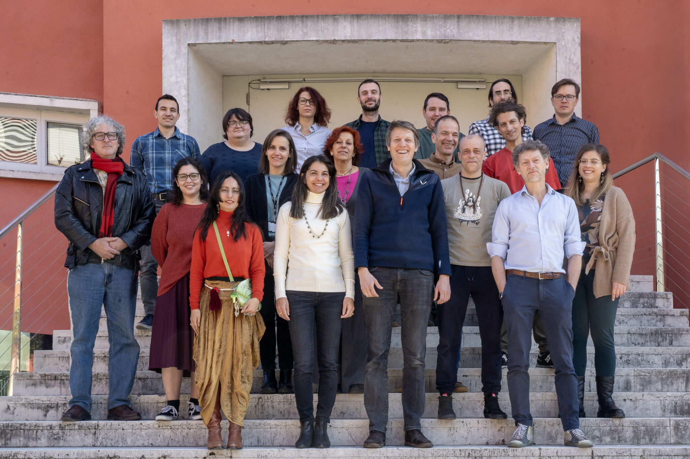

Timeline and Milestones
On Febraury 20th, 2025 the FESR-funded CRIMA Evidence-Based Management of Climate Risks, officially started with its kick-off meeting at Eurac Research HQ in Bolzano.

The project spans 36 months and includes the following milestones:
- Milestone 1 (Month 4): Requirements analysis
- Milestone 2 (Month 20): Proof of concept – Basic CRIMA system with impact chain modeling and limited query capabilities
- Milestone 3 (Month 32): Final system – Complete VKG integration, full user interface, ready for pilot scenarios
- Milestone 4 (Month 36): Evaluation of system through stakeholder testing and demonstration